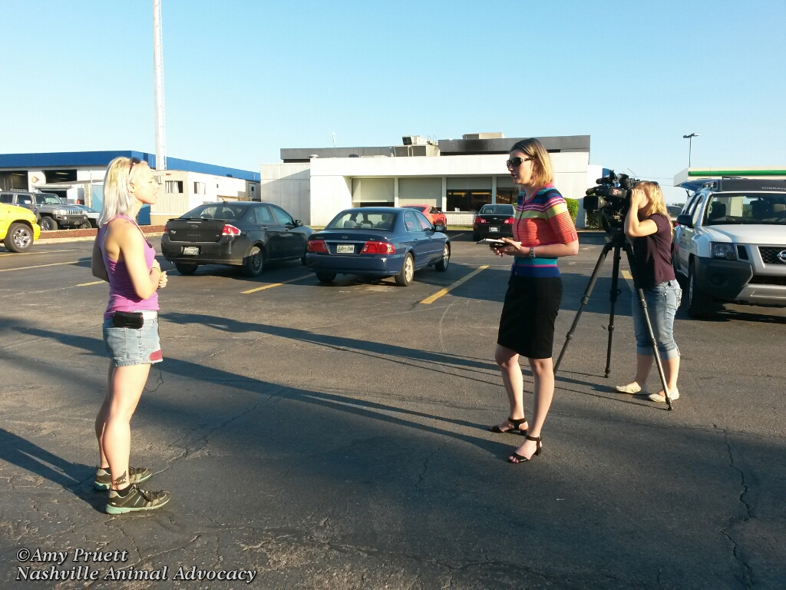

Nashville Animal Advocacy
For those involved or interested in animal rights, rescue, welfare and humane education efforts in the Nashville area and beyond.
About Us
Nashville Animal Advocacy was originally founded as a Meetup.com group in October 2012 by Laura Levy. Laura, a vegan and an active member of many dog and cat rescues, wanted a group to connect people who wanted to help animals with the people and groups that needed help. Laura sadly stepped down from the group a year after it began and eventually moved away from Nashville, though she hopes to come back someday, and we hope she does too! Laura passed her organizer responsibilities to Tricia Lebkuecher, who had been co-organizing since July 2013 and a member since the very first meeting. Tricia made the Facebook page in October 2013, and met her soon-to-be co-organizer, Amy Pruett in January of 2014 at a Ringling Bros. Circus protest. Amy and Tricia have run the group together from that point forward, and are looking ahead to incorporation as an official non-profit in the following months. Everyone in the group management is vegan and most are loving care-givers of adopted rescue animals. Our collective hope is that someday the world will be a safe and happy place for everyone, humans and animals alike.
Meet the team!
Tricia Lebkuecher - Organizer
Tricia has been involved with Nashville Animal Advocacy since its inception in October 2012, and has been organizing since June 2013. She has always wanted to be an activist full-time. She lives with one human and two cat companions, and could not be happier with her life!
tricia@nashvilleanimaladvocacy.org
Amy Pruett - Organizer
Amy is passionate about all animals and working towards animal liberation. She is a former veterinary technician, has two daughters and is the guardian to two rescued pit bulls.
amy@nashvilleanimaladvocacy.org
Megan Norris - Secretary
Megan has a BA degree in psychology and Spanish and a Masters degree in Social Work from University of Tennessee Knoxville. She feels that animals need to be advocated for as well as people on a legal level. She has a long history of advocating for human and animal rights internationally such as protesting Bull Fighting in Barcelona, Spain in 2011 alongside many other animal activists and participating in "paro"/ protests for free education in Valparaiso, Chile.
megan@nashvilleanimaladvocacy.org
Rick Woosley - Treasurer
Rick has been vegan since 2008 and has been involved in various animal advocacy causes since that time. He shares his life with wonderful animal companions and looks forward to helping make positive changes for animals here in the Middle Tennessee area.
rick@nashvilleanimaladvocacy.org
Julie Henry - Field Researcher and Photographer

Julie is a biologist/adventure traveler, photographer, and most importantly, activist. In the last 6 years she's worked as a wildlife investigator in South East Asia studying the impacts of the black market wildlife trade, an community organizer for GreenPeace's Operation Tiger, Forest Crimes Unit, and Clean Our Cloud campaigns, organizer for Tar Sands Blockade fighting against the construction of the Keystone XL pipeline, and lived in the backcountry of Montana and Wisconsin with a group called Wolf Patrol fighting against wolf hunting. In her downtime, she can be found hitting the rocks with her climber friends, or exploring a cave deep underground. She's also obsessed with her cats, but she refuses to say how many she has.
julie@nashvilleanimaladvocacy.org
Nelson Schoenbrot - Technical Officer
Nelson has been involved with Nashville Animal Advocacy since April 2015. Not to long ago he made the move from New York to Nashville. He is a long time vegetarian and recent vegan convert.
nelson@nashvilleanimaladvocacy.org
Events
Leafleting with Vegan Outreach in Middle Tennessee
From 8:00 am to 3:00 pm
10/27 Middle Tennessee State University (Murfreesboro, TN)
10/28 Tennessee State University (Nashville, TN)
10/30 Vanderbilt University (Nashville, TN)
11/2 Austin Peay State University (Clarksville, TN)
RSVP on Facebook